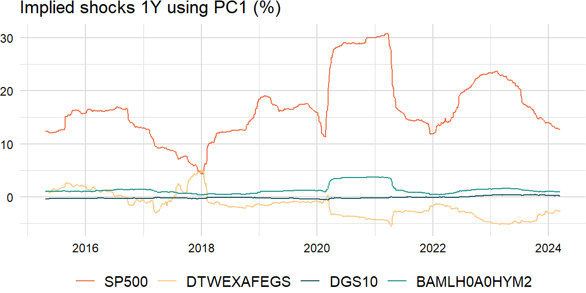
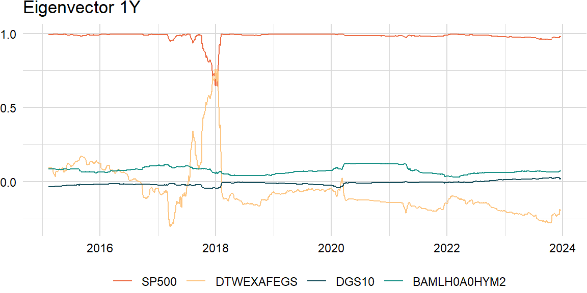

library(quantmod)
library(roll)
library(data.table)factors_r <- c("SP500", "DTWEXAFEGS") # "SP500" does not contain dividends; note: "DTWEXM" discontinued as of Jan 2020
factors_d <- c("DGS10", "BAMLH0A0HYM2")
factors <- c(factors_r, factors_d)
width <- 252
scale <- list("periods" = 252, "overlap" = 5)getSymbols(factors, src = "FRED")
levels_xts <- do.call(merge, c(lapply(factors, function(i) get(i)), all = TRUE))returns_xts <- do.call(merge, lapply(factors, function(i) {
if (i %in% factors_r) {
diff(log((levels_xts[ , i])))
} else if (i %in% factors_d) {
-diff(levels_xts[ , i]) / 100
}
}))
overlap_xts <- roll_mean(returns_xts, scale[["overlap"]], min_obs = 1, na_restore = TRUE)tickers <- "BAICX" # fund inception date is "2011-11-28"
invisible(getSymbols(tickers, src = "tiingo", api.key = Sys.getenv("TIINGO_API_KEY"), adjust = TRUE))
prices_xts <- do.call(merge, c(lapply(tickers, function(i) Cl(get(i))), all = TRUE))
colnames(prices_xts) <- tickers
index(prices_xts) <- as.Date(index(prices_xts))returns_xts <- merge(returns_xts, diff(log(prices_xts)))
overlap_xts <- merge(overlap_xts, roll_mean(returns_xts[ , tickers], scale[["overlap"]], min_obs = 1))# weights <- 0.9 ^ ((width - 1):0)
weights <- rep(1, width)# overlap_df <- na.omit(overlap_xts)
overlap_x_df <- na.omit(overlap_xts)[ , factors]
overlap_y_df <- na.omit(overlap_xts)[ , tickers]
overlap_x_xts <- tail(overlap_x_df, width)
overlap_y_xts <- tail(overlap_y_df, width)Decomposition
Underlying returns are structural bets that can be analyzed through dimension reduction techniques such as principal components analysis (PCA). Most empirical studies apply PCA to a covariance matrix (note: for multi-asset portfolios, use the correlation matrix because asset-class variances are on different scales) of equity returns (yield changes) and find that movements in the equity markets (yield curve) can be explained by a subset of principal components. For example, the yield curve can be decomposed in terms of shift, twist, and butterfly, respectively.
\[ \begin{aligned} \boldsymbol{\Sigma}&=\lambda_{1}\mathbf{v}_{1}\mathbf{v}_{1}^\mathrm{T}+\lambda_{2}\mathbf{v}_{2}\mathbf{v}_{2}^\mathrm{T}+\cdots+\lambda_{k}\mathbf{v}_{k}\mathbf{v}_{k}^\mathrm{T}\\ &=V\Lambda V^{\mathrm{T}} \end{aligned} \]
eigen_decomp <- function(x, comps) {
LV <- eigen(cov(x))
L <- LV$values[1:comps]
V <- LV$vectors[ , 1:comps]
result <- V %*% sweep(t(V), 1, L, "*")
return(result)
}comps <- 1eigen_decomp(overlap_x_xts, comps) * scale[["periods"]] * scale[["overlap"]] [,1] [,2] [,3] [,4]
[1,] 0.0195517711 -3.940514e-03 4.213494e-04 0.0014330512
[2,] -0.0039405145 7.941815e-04 -8.491986e-05 -0.0002888208
[3,] 0.0004213494 -8.491986e-05 9.080270e-06 0.0000308829
[4,] 0.0014330512 -2.888208e-04 3.088290e-05 0.0001050358# cov(overlap_x_xts) * scale[["periods"]] * scale[["overlap"]]Variance
We often look at the proportion of variance explained by the first \(i\) principal components as an indication of how many components are needed.
\[ \begin{aligned} \frac{\sum_{j=1}^{i}{\lambda_{j}}}{\sum_{j=1}^{k}{\lambda_{j}}} \end{aligned} \]
variance_explained <- function(x) {
LV <- eigen(cov(x))
L <- LV$values
result <- cumsum(L) / sum(L)
return(result)
}variance_explained(overlap_x_xts)[1] 0.8568637 0.9896005 0.9965407 1.0000000Similarity
Also, a challenge of rolling PCA is to try to match the eigenvectors: may need to change the sign and order.
\[ \begin{aligned} \text{similarity}=\frac{\mathbf{A}\cdot\mathbf{B}}{\|\mathbf{A}\|\|\mathbf{B}\|} \end{aligned} \]
roll_eigen1 <- function(x, width, comp) {
n_rows <- nrow(x)
result_ls <- list()
for (i in width:n_rows) {
idx <- max(i - width + 1, 1):i
evec <- eigen(cov(x[idx, ]))[["vectors"]][ , comp]
result_ls <- append(result_ls, list(evec))
}
result <- do.call(rbind, result_ls)
result <- xts(result, index(x)[width:n_rows])
colnames(result) <- colnames(x)
return(result)
}comp <- 1raw_df <- roll_eigen1(overlap_x_df, width, comp)
roll_eigen2 <- function(x, width, comp) {
n_rows <- nrow(x)
result_ls <- list()
for (i in width:n_rows) {
idx <- max(i - width + 1, 1):i
evec <- eigen(cov(x[idx, ]))[["vectors"]][ , comp]
if (i > width) {
similarity <- evec %*% result_ls[[length(result_ls)]]
evec <- as.numeric(sign(similarity)) * evec
result_ls <- append(result_ls, list(evec))
} else {
result_ls <- append(result_ls, list(evec))
}
}
result <- do.call(rbind, result_ls)
result <- xts(result, index(x)[width:n_rows])
colnames(result) <- colnames(x)
return(result)
}clean_df <- roll_eigen2(overlap_x_df, width, comp)